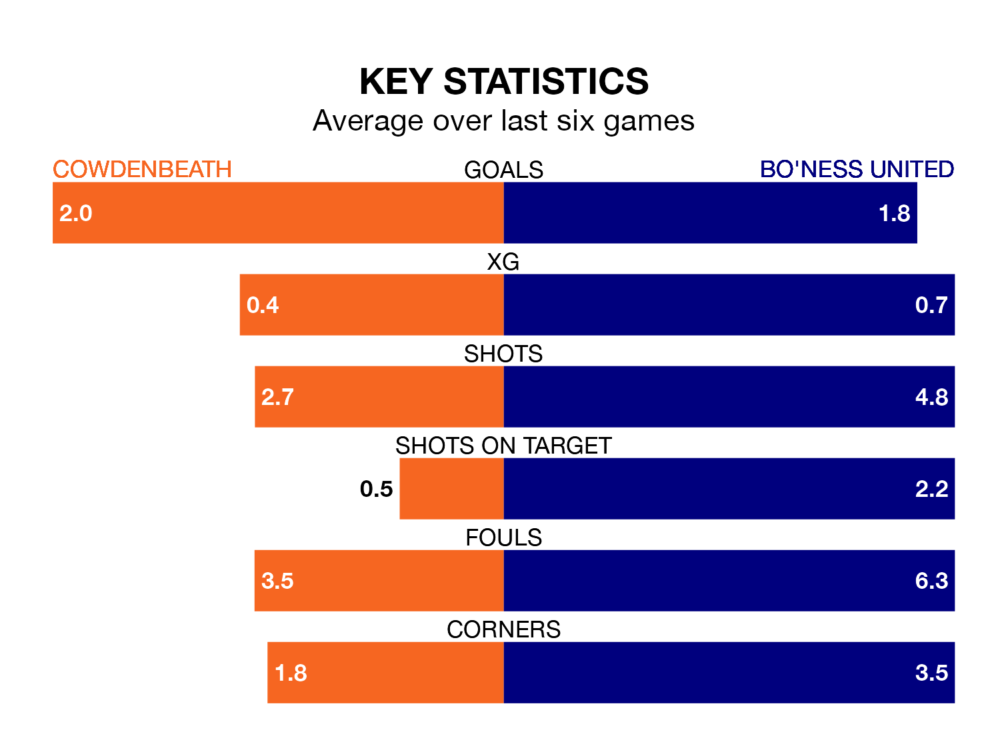

Struggling Cowdenbeath face Bo'ness United at Central Park on Saturday looking to build on a win in their last league outing.
After securing all three points with a 3-2 victory over East Stirlingshire on December 26, Cowdenbeath sit bottom of Highland and Lowland Football Leagues.
They travel to play a Bo'ness side sixth in the standings, who also won their last match, 4-2 against East Stirlingshire, on January 6.
With 41 goals in 21 games so far this season, Bo'ness are scoring more than average in the league with 2.0 goals per game. And they are conceding fewer than average, letting in 30 goals at a rate of 1.4 per game.
Cowdenbeath, meanwhile, are average scorers, with 1.8 goals per game. They have conceded 1.6 goals per game.
The home team are in reasonable form in Highland and Lowland Football Leagues, with three wins and two draws from their last six games.
And also with three wins and two draws over that period, United's form is identical – they have both taken 11 points from 18.
Updated: 10:50, 10/01/24